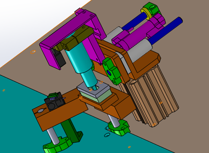
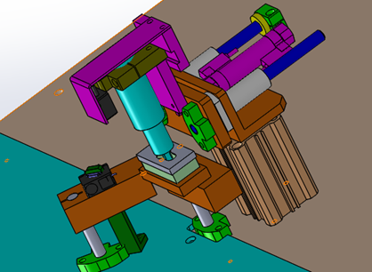

← Back to Projects
Automated Adhesive Workstation — Process & Mechanical Design
2023 · Industrial Process Development
Representative images used for illustration. Actual geometry and client data are confidential.
SolidWorks
DFM
Fixture Design
Pneumatics
Process Design
PLC programming
Automation
Quality Control
BOM / Assembly
Gallery
 


Overview
- Developed an automated adhesive workstation for a small-scale assembly process.
- Responsible for mechanical frame design, X–Y–Z pneumatic motion system, and fixture layout.
- The system automates dispensing, pressing, and alignment, improving uniformity and reducing manual work.
- Built on aluminum extrusion frame with modular design for easy maintenance and upgrades.
Mechanical Design
- Designed a dispensing–pressing module with adjustable height and interchangeable nozzles.
- Configured pneumatic cylinders for vertical motion and precise load control during pressing.
- Applied DFM principles and standard fasteners to simplify assembly and reduce fabrication cost.
- Created 3D CAD models, exploded views, and BOM documentation for manufacturing release.
Control Integration
- Developed the electrical schematic and relay logic for synchronized motion and dispensing control.
- Collaborated with the electrical team to configure PLC I/O, limit sensors, and solenoid valves.
- Implemented interlock protection and emergency stop circuits to ensure operational safety.
- Validated control sequence through dry-run testing and system timing optimization.
Validation & Results
- Performed bench tests to verify motion repeatability and coating accuracy within ±0.2 mm.
- Completed FMEA-based process review for alignment, fixture setup, and pneumatic response.
- Conducted over 100 automated cycles with consistent adhesive quality and no system failure.
- Reduced cycle time by approximately 40%; all data and images shown are representative only.